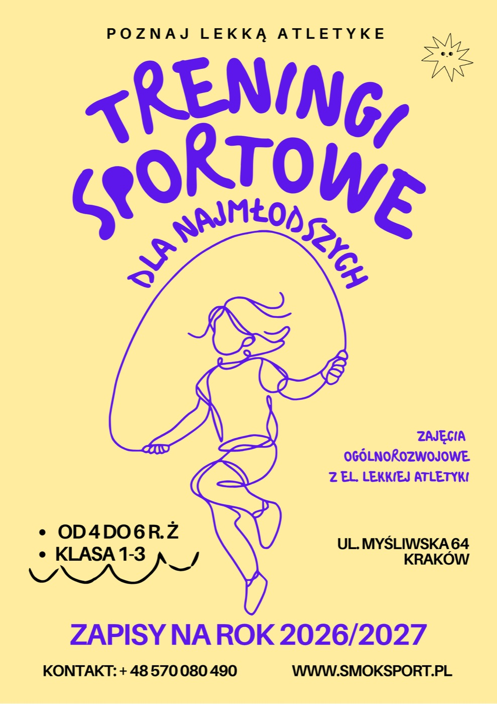

{{POST_TITLE}}
Smok Sport prowadzi zajęcia lekkoatletyczne i ogólnorozwojowe dla dzieci od 4 lat w Krakowie-Płaszowie (SP nr 47, ul. Myśliwska 64). Zapisy na sezon 2026/2027 trwają, a pierwsze zajęcia są darmowe.
Zapraszamy na nowy rok zajęć 2026/2027! To zajęcia, na których dzieci przede wszystkim bawią się w sport i poznają pierwsze elementy lekkiej atletyki. Zapraszamy dzieci w wieku przedszkolnym oraz uczniów klas I–III, którzy chcą aktywnie spędzać czas, rozwijać swoje umiejętności ruchowe i rozpocząć pierwszą przygodę z lekkoatletyką.
Kiedy i gdzie są zajęcia?
- Grupa szkolna (klasy 1–3): piątek, 16:45. Są wolne miejsca.
- Grupa przedszkolna (4–6 lat): środa, 18:15. Obecnie brak wolnych miejsc.
- „Motoryka smyka” w CKP Płaszów: wtorek, 18:00, zapisy przez CKP.
Trenujemy w Szkole Podstawowej nr 47 przy ul. Myśliwskiej 64, na dużej sali gimnastycznej i na bieżni. Szczegóły znajdziesz w grafiku na stronie Oferta zajęć.
Ile kosztują zajęcia?
W I semestrze 2026/2027 zajęcia kosztują 600 zł za semestr albo 160 zł miesięcznie (4 płatności). Rodzeństwo płaci o 50 zł mniej za każde dziecko w opłacie semestralnej. Płacisz dopiero po pierwszych zajęciach. Wszystkie zasady są w cenniku.

Czego dzieci uczą się na zajęciach?
Podczas zajęć dzieci poznają podstawy:
- biegania i różnych form biegów,
- skoków i ćwiczeń rozwijających skoczność,
- rzutów i ćwiczeń kształtujących siłę oraz celność,
- koordynacji ruchowej,
- zwinności i szybkości reakcji,
- równowagi, sprawności i ogólnej kondycji.
Zabawa zamiast presji na wynik
Wszystko w formie dostosowanej do wieku dzieci: poprzez gry, zabawy, ćwiczenia i lekkoatletyczne wyzwania. Bez presji na wynik. Najważniejsze są ruch, dobra zabawa, rozwój i pozytywne pierwsze doświadczenia ze sportem. Taki sposób wprowadzania dzieci w lekkoatletykę jest zgodny z założeniami programów dla najmłodszych, w których nacisk kładzie się na zabawę oraz wszechstronny rozwój motoryczny.
Kto prowadzi zajęcia?
Uczą byli lekkoatleci, którzy biegali w barwach KS AZS AWF Kraków i zdobywali medale Mistrzostw Polski: Magdalena Kunc, Sara Drwal i Grzegorz Kunc. Współpracujemy z KS AZS AWF Kraków: zaangażowane dzieci są zapraszane tam na trening próbny. Poznaj naszych trenerów.
Jak zapisać dziecko?
Wypełnij formularz zapisu, zadzwoń pod numer +48 570 080 490 albo napisz na {{CONTACT_EMAIL}}. Pierwsze zajęcia są darmowe.